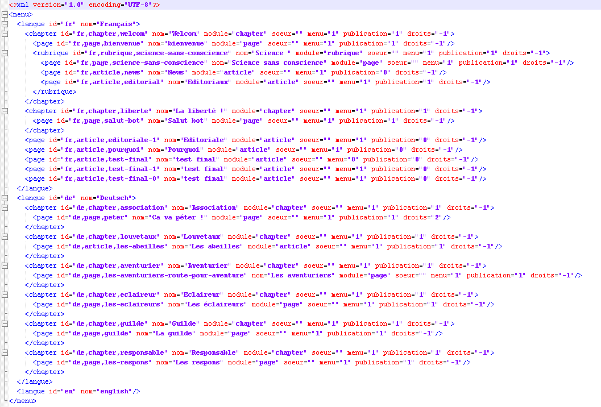

Données
Les données du site (texte des pages) sont stockés dans le dossier /data. Pour sauvegarder les données du site, il suffit de faire une
copie de ce dossier.
Données de la page
Les données de la page sont stockés dans un fichier /data/module/nom-du-fichier.xml.

L'arborescence
L'arborescence (le menu) du site est stocké dans un fichier /data/arborescence.xml.
